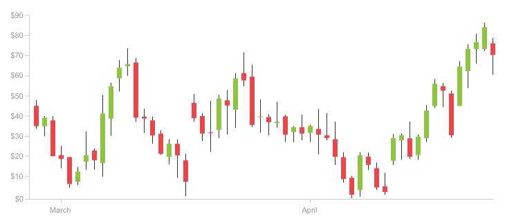

ENGR AUWAL ZUBAIR
Founder and CEO of KC Academy
KC Academy is a specialized cryptocurrency school established in 2022. We focus on equipping students with the best knowledge and practical strategies in the world of digital finance. Through high-quality training in blockchain analysis, market strategies, and real-time trading, our academy stands out as one of the best in crypto education.
Evaluating crypto markets through price charts, volume, and trends to predict movements and make smart trades.
Understanding the real-world value of cryptocurrencies by studying their technology, team, use case, and utility.
Examining blockchain data like transactions, wallet flows, and supply to gain deeper insights into the market.
Learn to read candlestick patterns to detect market trends, reversals, and price actions.
